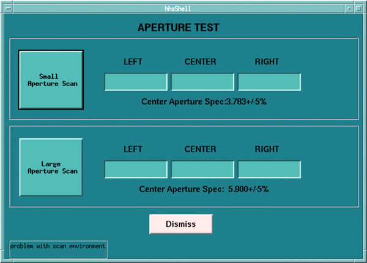

Operating Documentation
Direction 5181178-800, Rev# 16
BrightSpeed Select Service Methods Gen
Module Version 1.0, Version Date 7/23/12
Operating Documentation |
| Required Persons | Preliminary Reqs | Procedure | Finalization |
|---|---|---|---|
| 1 | Not Applicable | 10 mins | Not Applicable |
This module is to run the “Collimator Aperture Test” procedure, which performs a scan at each aperture and compares the average collimator aperture against a nominal aperture for that scan mode. All data collections and calculations are performed with Z-Axis Tracking On.
| Condition | Reference | Effectivity |
|---|---|---|
Before beginning this procedure, please read the gantry general safety information. Safety > Equipment Service-Gantry | - | - |
Move the table away from the gantry and remove any objects from the detector field of view.
On the console select the [DIAGNOSTICS] tab in the common service desktop.
Launch the [COLLIMATOR APERTURE TEST].

Small Aperture Scan
This button will launch the process, which includes scanning, and post the appropriate results in the Left, Center, Right windows.
Large Aperture Scan
This button will launch the process, which includes scanning, and post the appropriate results in the Left, Center, Right windows.
No finalization steps.